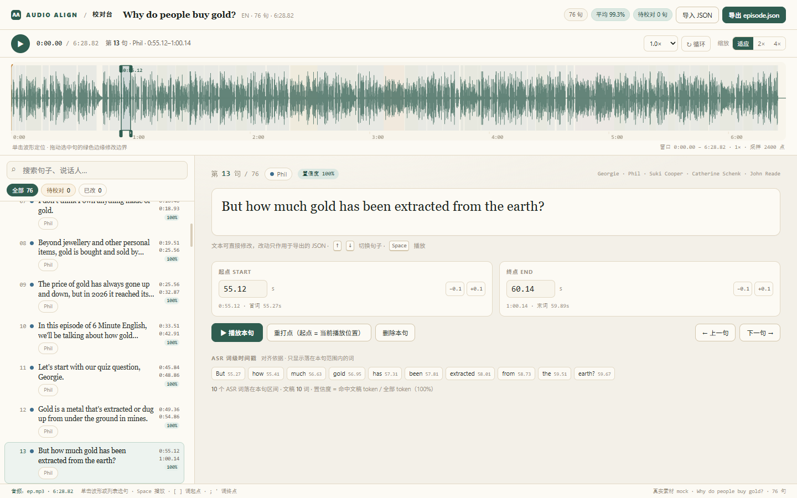
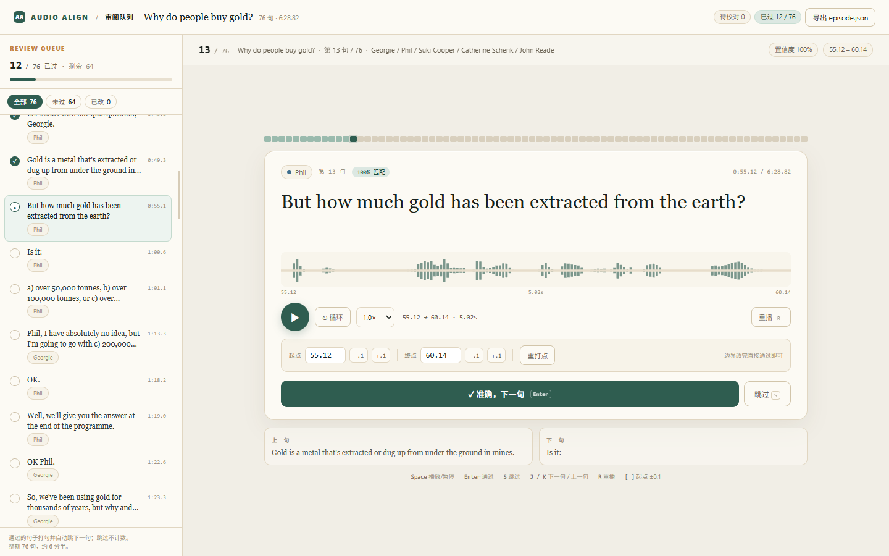
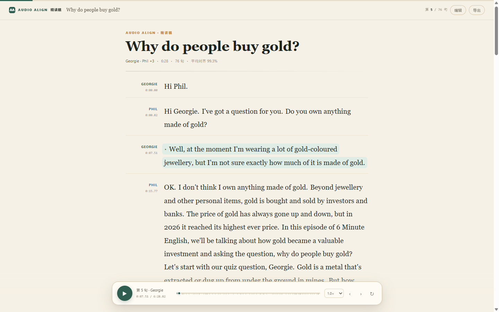

推荐
preview.html · 1440

看全局，也改得动。波形上直接看到句子块与静音缝隙，拖边缘改边界；下方编辑器给到词级时间戳与置信度。
适合逐期精修、抓切首词/切尾词
代价前端最重；时间轴缩放/拖拽要打磨
依赖预计算 peaks；建议加词级 sidecar
preview.html · 1440

一次只判断一句。大字号 + 单句波形 + 「准确/跳过」；左侧队列记录进度，适合每天批量过稿。
适合低置信度多、需要稳定节奏
代价缺全局视角，精修仍要回表格
依赖仅现有数据；评审状态本地持久化
03沉浸精读稿
READER / TELEPROMPTER
preview.html · 1440

先读，再改。把句子还原成对话段落，当前句跟随播放高亮；编辑收进底部工具条，适合内容校对与跟读。
适合通读检查、直接当听力页交付
代价时间边界编辑弱，长稿定位靠跳句
依赖无新增数据；可开放 hash 定位
三种方案共用episode.json 的 76 句真实数据；都保持单文件 `preview.html`、本地 `file://` 打开、无后端。
生产化前置：edited 落盘 · needs_review 重算 · duration 收口（上一轮 review 的三处契约问题）